Hybrid natural-language access to the True Demand RDF knowledge graph and Digital Reference ontology.
Core message: deterministic where possible, LLM only where needed, audited end-to-end.
True Demand data is valuable but hard to access through raw RDF and SPARQL.
LLMs can generate multiple valid-looking SPARQL queries with different meanings.
Provide fast, graph-grounded, auditable answers for non-technical users.
| Layer | Content | Role |
|---|---|---|
| True Demand KG | >1.16M RDF triples, 100k+ entities | SPARQL execution backend for analytics |
| Schema abstraction | Classes, properties, supported dimensions | Prompting, validation, routing, ranking |
| Digital Reference ontology | ~2,742 searchable ontology terms | Definitions, domain/range, class hierarchy |
Demand, shortages, inventory, vehicle sales, autonomous driving, regions, quarters.
Definitions and model-level questions such as “What is a Technology Node?”
Conservative graph-grounded recommendations from query outputs.
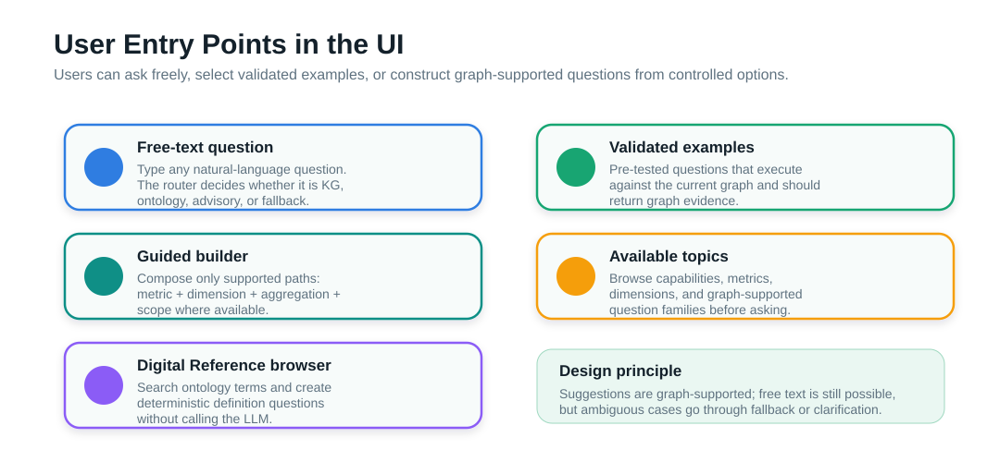
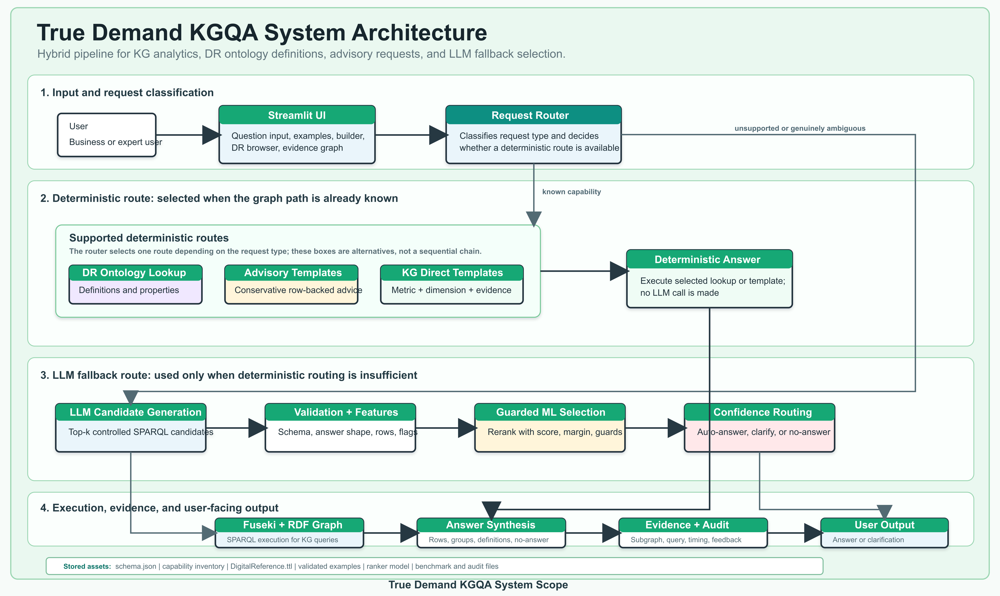
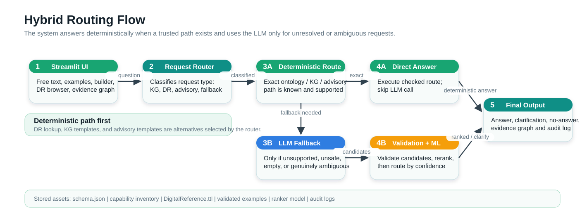
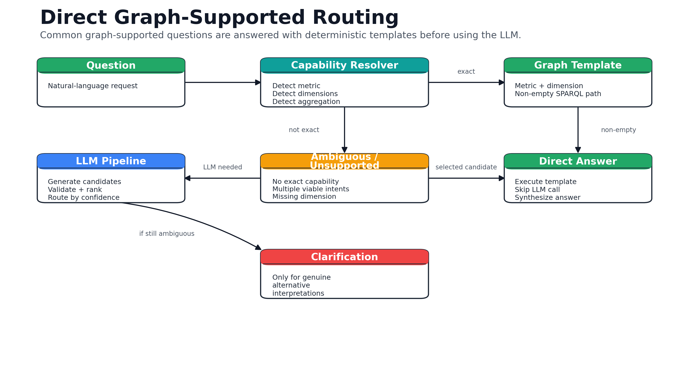
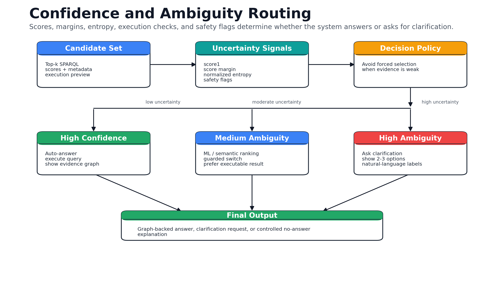
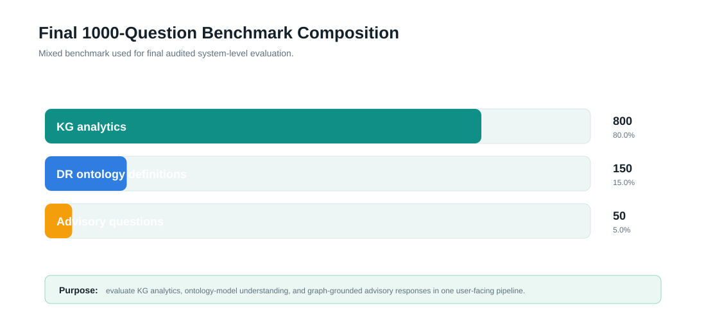
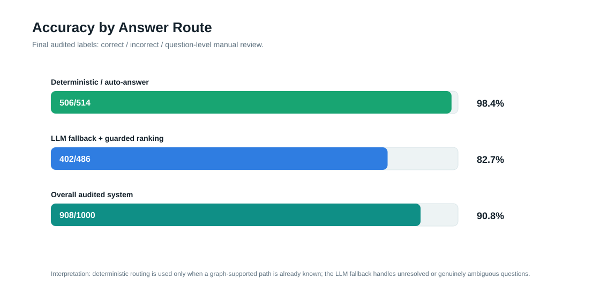
| Question family | Questions | Correct | Accuracy |
|---|---|---|---|
| KG analytics | 800 | 710 | 88.8% |
| DR ontology definitions | 150 | 150 | 100.0% |
| Advisory questions | 50 | 48 | 96.0% |
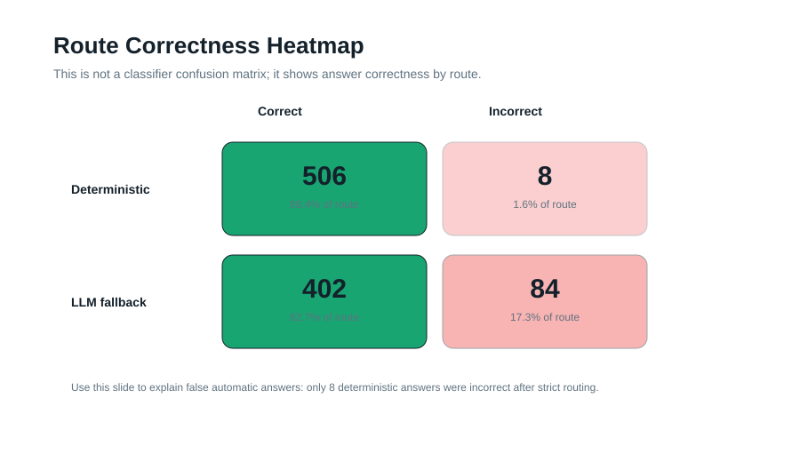
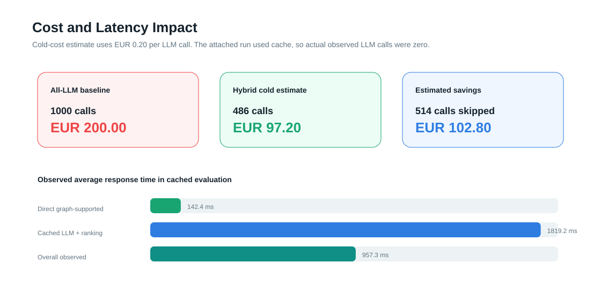
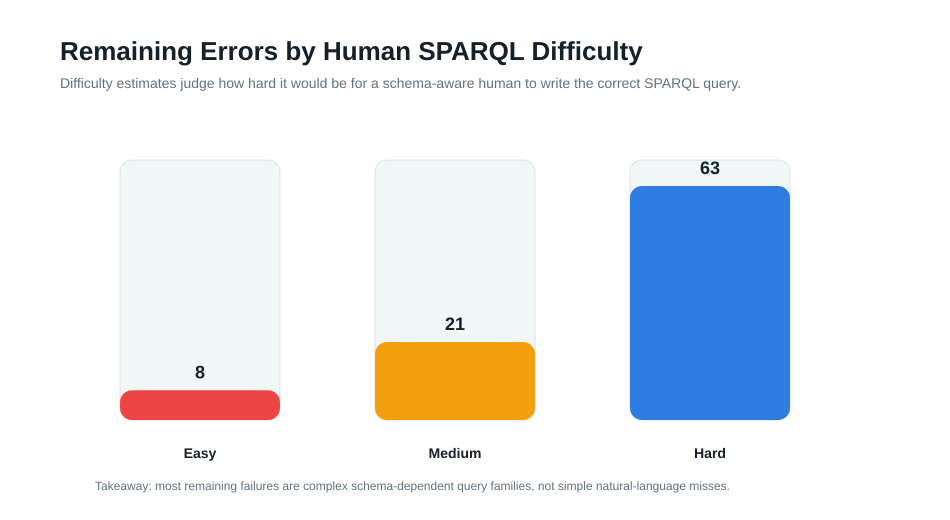
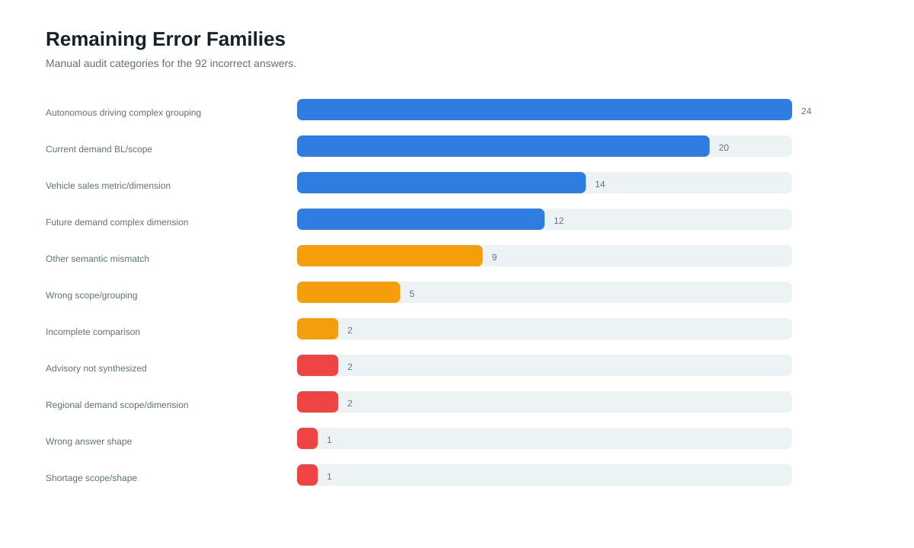
The main contribution is a reliable hybrid architecture: deterministic where graph paths are known, LLM fallback where needed, and auditable evidence for final answers.